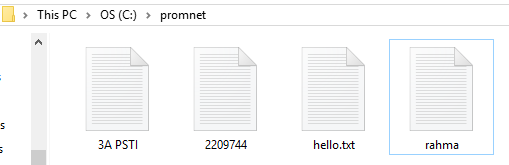
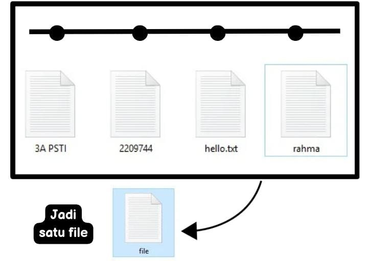
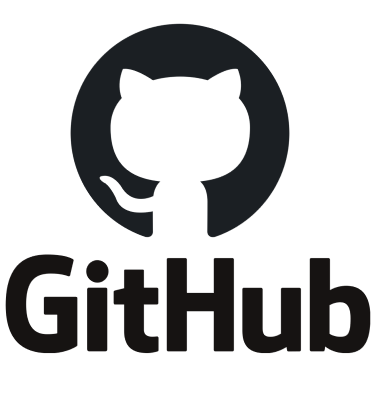

DEFINISI GIT
Git adalah singkatan dari Group Inclusive Tour yaitu sebuah tools untuk programmer atau developer yang berfungsi sebagai control system pada file proyek yang dikerjakan
oleh sekelompok orang ataupun individu. Dalam Git terdapat merge untuk menyebut aktifitas penggabungan kode.Git dikenal juga dengan distributed revision control (VCS terdistribusi) penyimpanan database yang tidak hanya berada dalam satu tempat saja.
Setiap orang yang dalam pengkodean proyek akan menyimpan database Git, sehingga akan memudahkan dalam mengelola proyek baik online maupun offline.
FUNGSI GIT
Fungsi utama dari git adalah untuk mengatur versi dari sebuah source code program dengan cara memberikan tanda baris dan code yang akan ditambah atau diganti.
Dapat memanfaatkan Git untuk mengerjakan proyek yang sama (kerja tim).
Git adalah tools yang bersifat open source, sehingga dapat digunakan untuk membuat perangkat lunak secara open source.
Dapat menyimpan proyek ke folder dalam bentuk, v1, v2, v3 dan memiliki satu proyek dengan menggunakan database khusus yang berisi semua versi file.
Dapat digunakan sebagai solusi untuk hosting pada semua proyek.
Jika terjadi kesalahan atau masalah dalam mengembangkan versi terbaru, Git dapat dengan mudah mengembalikan ke dalam versi sebelumnya.
PERINTAH DASAR GIT
MANFAAT MENGGUNAKAN GIT
FITUR GIT
Fitur Git pertama adalah memiliki version control system yang terdistribusi.Fitur ini menggunakan pendekatan peer to peer yaitu Subversion atau SVN yang menggunakan model client server.
Fitur Git branch code ini berfungsi agar para developer memiliki brand code yang independen dan masif. Dengan fitur ini, maka developer bisa membuat, menghapus, dan juga menggabungkan branch secara lebih cepat dan mudah.
Dapat membantu untuk memastikan sebuah tindakan telah diselesaikan dengan lengkap atau tidak. Fitur ini sangat penting karena ada beberapa version control system yang operasinya menggunakan non-atomic.
Jika ada sistem kontrol yang bersifat non atomic, dan bergantung pada repository, maka kondisi repository menjadi tidak stabil.
Fitur Git yang lain adalah memiliki media penyimpanan dalam folder .git, Berbeda dengan VCS lain seperti CVS atau SVN yang memiliki media penyimpanan tersembunyi seperti, .svn, .cvs, dan juga .etc.
Memiliki fitur penting untuk mengintegrasikan cryptographic yaitu data model. Fitur ini dapat membantumu untuk memastikan integritas cryptographic pada repository.
Dengan adanya fitur Git ini, maka developer bisa menggunakan staging area saat melakukan format commit dan untuk review sebelum akhirnya diterapkan.
ALUR KERJA GIT
Basic workflow adalah alur kerja Git dasar yang cocok untuk developer perangkat lunak pemula dan sederhana.
Alur kerja ini hanya memiliki satu repository pusat sehingga setiap developer menduplikasi repository lokal sebelum menempatkan pada repository pusat.
Alhasil, sistem kontrol yang terdistribusi developer tidak akan merilis software tersebut jika salah satu fitur tidak lengkap.
Alur kerja Git berikutnya adalah Feature Git Branches. Alurnya dimulai dari mengasumsikan repository pusat, kemudian menggunakan master yang mewakili rakyat proyek resmi.
Segala perubahan yang terjadi pada cabang master dapat dipasang dan tetap stabil. Nah jika akan membuat fitur baru, version control system yang terdistribusi akan membuat cabang master dan
memberi nama sesuai dengan fitur untuk upgrade UI.Selain itu, alur kerja Feature Git Branches juga dapat membuat cabang dari fitur yang sudah ada.
Alur kerja ini memungkinkan developer untuk memiliki repository mereka sendiri, dibandingkan menggunakan satu server yang berperan sebagai pusat basis kode.
Lebih lengkap, repository yang dibuat oleh developer ini akan dikembangkan pada sisi server dan mereplikasikan pada sistem lokal. Kemudian, jalur jarak jauh desain Git digunakan untuk repository utama, dan ditambahkan ke distributed version control system, di mana penggabungan ini dilakukan pada repository utama server.Alur kerja Git Flow adalah alur kerja dengan cabang fitur. Perbedaan dari alur kerja lainnya ada pada cara pengembang untuk membuat cabang.
Alur ini, developer tidak diperbolehkan untuk membuat cabang langsung dari cabang master, hal ini dikarenakan untuk menghapus code review yang menyinggung cabang mast
Alur kerja yang terakhir adalah Gitlab Flow, perbedaan yang paling mencolok dari alur kerja
Flow adalah pada environment branch seperti, staging, dan production.
Branch ini memiliki beberapa proyek yang memungkinkan perluasan terhadap distributed version control system untuk menggabungkan cabang-cabang fitur.
Selain cabang master, GitLab Flow jika memiliki cabang lainnya yaitu, produksi, lingkungan, dan rilis.
Sehingga pada setiap kali sebuah file ditambahkan ataupun di commit, checksum nya akan diciptakan sama seperti retrieve melalui checksum nya juga.
ILUSTRASI CARA KERJA GIT
Git akan memantau semua perubahan yang terjadi pada file proyek. Lalu menyimpannya ke dalam database.
Sebelum menggunakan git
Setelah menggunakan git
KELEBIHAN GIT
KEKURANGAN GIT
PERBEDAAN GIT dan GITHUB
A. GIT

PERBEDAAN GIT dan GITHUB
B. GITHUB
SUMBER MATERI